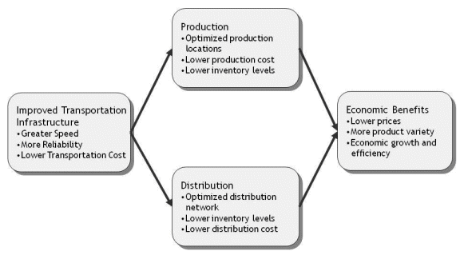

The Value of Freight: Introduction to the Role of Freight Transportation
Transportation services are needed to deliver raw and intermediate materials to producers and to deliver final products to retailers and final customers. Supply chain management (SCM) involves decisions about what to produce, what inputs to use, how to configure a distribution network, how much inventory to maintain, and how to transport inputs and products. Logistics management is the part of SCM that involves decisions about how and when to get raw materials, intermediate goods, and finished goods from their respective origins to their destinations. Included in logistics management are choices of modes of transportation (rail, truck, water etc.), shipment characteristics (less-than-load vs. full load, etc.), warehousing, and levels of inventories to maintain. These are inter-related and not independent decisions.
Many factors affect producers’ logistical choices and supply chain configurations. These include the costs of the transportation modes, the reliability of the transportation modes, the ease of switching between modes, the costs of holding inventory, and the amount of logistical costs as a share of total production, distribution and marketing costs. Some of these other logistics inputs can be used as substitutes for freight transportation, while others are compliments. For example, if a firm cannot rely on fast and reliable transportation, it can still accommodate the demands of its customers by siting its warehouses closer to its customers (at the same time constructing warehouses with smaller capacity), increasing its inventory levels so that it can respond to unexpected increases in final demand, and/or siting its production closer to the locations of its final demand (once again requiring that each production site have smaller capacity). When transportation services are improved, the firm can centralize its warehouse and production operations and maintain lower overall inventory levels. Improvements in information technology can also improve the utilization of transportation services, making them more attractive relative to the use of other logistics inputs. An example of this complementary relationship was the widespread adoption of just-in-time inventory management. With just-in-time inventory management, fast and reliable transportation has been combined with information technology to reduce the need for maintaining large inventories, improving the overall efficiency of the logistics process.
In general, some shipper responses to changes in transportation costs and reliability are short run in nature, while others are longer run. For example, consider the impact of an increase in rail rates. In the short run, the producer might consider drawing down inventory with the plan to rebuild them when rail rates come back down. If the rate increase is viewed as more permanent, the producer might seek out alternative modes of transportation and, to the extent possible, decrease use of rail transportation. But this might take a bit more time than drawing on inventories. In the much longer run, the producer could make changes to plant location and distribution design. It should be noted however, that even in the long run, some shippers may still have limited options. For example, the site of a coal-burning electricity generating plant is essentially fixed (although the plant operator has some flexibility in the use of the plant’s capacity and its dispatch order). A recent study by the U.S. General Accountability Office (“GAO study”) discusses the adjustments businesses may take in response to reduced freight reliability in their supply chains. Adjustments could include carrying higher inventories in warehouses for meeting production needs, planning for longer than normal transit time, and not serving specific markets that cannot be reliably accessed. Furthermore, industries that use “just-in-time” production processes that rely on predictable transportation are especially likely to be affected by diminished freight transportation reliability.[2]
Figure 1 illustrates the vital link performed by freight transportation in supply chains and economic performance. Improvements in freight transportation efficiency, reliability and level of service have numerous economic benefits for production efficiency, optimization of distribution networks and product choice and cost to consumers. As improvements are made in transportation infrastructure, producers are able to centralize their production operations and site their operations in lower-cost areas, because the uncertainties concerning the movement of goods to customers are reduced. Improvements in transportation infrastructure also allow a more efficient design of the distribution network. The cost of inventories can be reduced as the needed hedge against transportation uncertainties is reduced. This also allows firms to change their inventories quickly in response to customers’ changing needs or desires. This ultimately leads to lower cost and greater product variety for customers.
Figure 1. The Role of Freight Transportation in Efficient Production and Distribution
Keep America in Motion is a public online forum that that offers more information about the role of transportation in supply chains and discussion about supply chain issues.
[1] The relationship between transportation and inventory management was first explored by William J. Baumol and Hrishikesh D. Vinod, "An Inventory Theoretic Model of Freight Transportation Demand," Management Science, 14(7), March 1970, pp. 413-421.
[2] United States General Accountability Office, Freight Transportation, National Policy and Strategies Can Help Improve Freight Mobility, GAO-08-287, January 2008, p. 21.